The dataset, diabetes_binary_health_indicators_BRFSS2015.csv, is a clean dataset of 253,680 survey responses to the CDC’s BRFSS2015. The target variable Diabetes_binary has 2 classes. 0 is for no diabetes, and 1 is for prediabetes or diabetes. This dataset has 21 other feature variables and is not balanced.
Information for all the columns are listed below according to codebook15_llcp (listed in the folder):
Diabetes_binary: 0 = no diabetes; 1 = prediabetes or diabetes
HighBP: 0 = no high BP; 1 = high BP
HighChol: 0 = no high cholesterol; 1 = high cholesterol
CholCheck: 0 = no cholesterol check in 5 years; 1 = yes cholesterol check in 5 years
BMI: Body Mass Index
Smoker: Have you smoked at least 100 cigarettes in your entire life? [Note: 5 packs = 100 cigarettes] 0 = no; 1 = yes
Stroke: (Ever told) you had a stroke. 0 = no; 1 = yes
PhysActivity: physical activity in past 30 days - not including job. 0 = no; 1 = yes
Fruits: Consume Fruit 1 or more times per day. 0 = no; 1 = yes
Veggies: Consume Vegetables 1 or more times per day. 0 = no; 1 = yes
HvyAlcoholConsump: (adult men >=14 drinks per week and adult women>=7 drinks per week) 0 = no; 1 = yes
AnyHealthcare: Have any kind of health care coverage, including health insurance, prepaid plans such as HMO, etc. 0 = no; 1 = yes
NoDocbcCost: Was there a time in the past 12 months when you needed to see a doctor but could not because of cost? 0 = no; 1 = yes
GenHlth: Would you say that in general your health is: scale 1-5. 1 = excellent; 2 = very good; 3 = good; 4 = fair; 5 = poor
MentHlth: days of poor mental health. scale 1-30 days
PhysHlth: physical illness or injury days in past 30 days. scale 1-30
DiffWalk: Do you have serious difficulty walking or climbing stairs? 0 = no; 1 = yes
Sex: 0 = female; 1 = male
Age: 13-level age category (_AGEG5YR see codebook) 1 = 18-24; 9 = 60-64; 13 = 80 or older
Education: Education level (EDUCA see codebook) scale 1-6. 1 = Never attended school or only kindergarten; 2 = Grades 1 through 8 (Elementary); 3 = Grades 9 through 11 (Some high school); 4 = Grade 12 or GED (High school graduate); 5 = College 1 year to 3 years (Some college or technical school); 6 = College 4 years or more (College graduate)
Income: Income scale (INCOME2 see codebook) scale 1-8. 1 = less than $10,000; 2 = Less than $15,000 ($10,000 to less than $15,000); 3 = Less than $20,000 ($15,000 to less than $20,000); 4= Less than $25,000 ($20,000 to less than $25,000); 5 = less than $35,000; 6 = Less than $50,000 ($35,000 to less than $50,000); 7 = Less than $75,000 ($50,000 to less than $75,000); 8 = $75,000 or more
The purpose of this EDA is to read in data from diabetes_binary_health_indicators_BRFSS2015.csv and to clean BRFSS data into a useable format for modeling based on diabetes disease research regarding factors influencing diabetes disease and other chronic health conditions. Only select features are included in this analysis.
Data
#load packages neededlibrary(tidyverse)
Warning: package 'tidyverse' was built under R version 4.3.3
Warning: package 'ggplot2' was built under R version 4.3.3
Warning: package 'readr' was built under R version 4.3.3
── Attaching core tidyverse packages ──────────────────────── tidyverse 2.0.0 ──
✔ dplyr 1.1.4 ✔ readr 2.1.5
✔ forcats 1.0.0 ✔ stringr 1.5.1
✔ ggplot2 3.5.1 ✔ tibble 3.2.1
✔ lubridate 1.9.3 ✔ tidyr 1.3.1
✔ purrr 1.0.2
── Conflicts ────────────────────────────────────────── tidyverse_conflicts() ──
✖ dplyr::filter() masks stats::filter()
✖ dplyr::lag() masks stats::lag()
ℹ Use the conflicted package (<http://conflicted.r-lib.org/>) to force all conflicts to become errors
library(ggplot2)
#read in csv datadata_original <-read_csv('diabetes_binary_health_indicators_BRFSS2015.csv')
Rows: 253680 Columns: 22
── Column specification ────────────────────────────────────────────────────────
Delimiter: ","
dbl (22): Diabetes_binary, HighBP, HighChol, CholCheck, BMI, Smoker, Stroke,...
ℹ Use `spec()` to retrieve the full column specification for this data.
ℹ Specify the column types or set `show_col_types = FALSE` to quiet this message.
First, from the result, we can see that there are no NA entries from each variable. Second, considering the meaning of different variables, we can see that there are no column with zero values indicating missing values. Altogether, we can conclude that there are no missing values in the whole dataset.
Next, we can check whether there are duplicated data in this dataset.
#from the output, we see that there are 24206 duplicates#then we need to exclude data that are duplicated#dataset data is updated heredata_no_duplicates <- data_original[!duplicated(data_original), ]nrow(data_no_duplicates)
[1] 229474
#from the output, there are total 229,474 rows in the updated dataset data
Now we want to convert numeric variables to factors according to previous sorted unique values for each variable.
data <- data_no_duplicatesdata$Diabetes_binary <-factor( data$Diabetes_binary, levels =c(0,1), labels =c("Prediabetes or diabetes", "Diabetes"))data$HighBP <-factor( data$HighBP,levels =c(0,1), labels =c("No high BP", "High BP"))data$HighChol <-factor( data$HighChol,levels =c(0,1), labels =c("No high cholesterol", "High cholesterol"))data$CholCheck <-factor( data$CholCheck,levels =c(0,1), labels =c("No cholesterol check", "Cholesterol check"))data$Smoker <-factor( data$Smoker,levels =c(0,1), labels =c("No", "Yes"))data$Stroke <-factor( data$Stroke,levels =c(0,1), labels =c("No", "Yes"))data$HeartDiseaseorAttack <-factor( data$HeartDiseaseorAttack,levels =c(0,1), labels =c("No", "Yes"))data$PhysActivity <-factor( data$PhysActivity,levels =c(0,1), labels =c("No", "Yes"))data$Fruits <-factor( data$Fruits,levels =c(0,1), labels =c("No", "Yes"))data$Veggies <-factor( data$Veggies,levels =c(0,1), labels =c("No", "Yes"))data$HvyAlcoholConsump <-factor( data$HvyAlcoholConsump,levels =c(0,1), labels =c("No", "Yes"))data$AnyHealthcare <-factor( data$AnyHealthcare,levels =c(0,1), labels =c("No", "Yes"))data$NoDocbcCost <-factor( data$NoDocbcCost,levels =c(0,1), labels =c("No", "Yes"))data$GenHlth <-factor( data$GenHlth,levels =c(1, 2, 3, 4, 5), labels =c("Excellent", "Very good", "Good", "Fair", "Poor"))data$DiffWalk <-factor( data$DiffWalk,levels =c(0,1), labels =c("No", "Yes"))data$Sex <-factor( data$Sex,levels =c(0,1), labels =c("Female", "Male"))data$Age <-factor( data$Age,levels =c(1, 2, 3, 4, 5, 6, 7, 8, 9, 10, 11, 12, 13), labels =c("18-24", "25-29", "30-34", "35-39", "40-44", "45-49", "50-54", "55-59", "60-64", "65-69", "70-74", "75-79", "80 or older"))data$Education <-factor( data$Education,levels =c(1, 2, 3, 4, 5, 6), labels =c("Never attended school or only kindergarten", "Elementary", "Some high school", "High school graduate", "Some college or technical school", "College graduate"))data$Income <-factor( data$Income,levels =c(1, 2, 3, 4, 5, 6, 7, 8), labels =c("Less than $10,000", "$10,000 to less than $15,000", "$15,000 to less than $20,000", "$20,000 to less than $25,000", "$25,000 to less than $35,000", "$35,000 to less than $50,000", "$50,000 to less than $75,000", "$75,000 or more"))str(data)
Let’s look at a summary of each numeric column in data, including minimum, 1st quartile (Q1), median (Q2), mean, 3rd quartile (Q3), and maximum values.
summary(data_no_duplicates)
Diabetes_binary HighBP HighChol CholCheck
Min. :0.0000 Min. :0.0000 Min. :0.0000 Min. :0.0000
1st Qu.:0.0000 1st Qu.:0.0000 1st Qu.:0.0000 1st Qu.:1.0000
Median :0.0000 Median :0.0000 Median :0.0000 Median :1.0000
Mean :0.1529 Mean :0.4543 Mean :0.4416 Mean :0.9595
3rd Qu.:0.0000 3rd Qu.:1.0000 3rd Qu.:1.0000 3rd Qu.:1.0000
Max. :1.0000 Max. :1.0000 Max. :1.0000 Max. :1.0000
BMI Smoker Stroke HeartDiseaseorAttack
Min. :12.00 Min. :0.0000 Min. :0.00000 Min. :0.0000
1st Qu.:24.00 1st Qu.:0.0000 1st Qu.:0.00000 1st Qu.:0.0000
Median :27.00 Median :0.0000 Median :0.00000 Median :0.0000
Mean :28.69 Mean :0.4658 Mean :0.04482 Mean :0.1033
3rd Qu.:32.00 3rd Qu.:1.0000 3rd Qu.:0.00000 3rd Qu.:0.0000
Max. :98.00 Max. :1.0000 Max. :1.00000 Max. :1.0000
PhysActivity Fruits Veggies HvyAlcoholConsump
Min. :0.000 Min. :0.0000 Min. :0.0000 Min. :0.00000
1st Qu.:0.000 1st Qu.:0.0000 1st Qu.:1.0000 1st Qu.:0.00000
Median :1.000 Median :1.0000 Median :1.0000 Median :0.00000
Mean :0.733 Mean :0.6127 Mean :0.7946 Mean :0.06079
3rd Qu.:1.000 3rd Qu.:1.0000 3rd Qu.:1.0000 3rd Qu.:0.00000
Max. :1.000 Max. :1.0000 Max. :1.0000 Max. :1.00000
AnyHealthcare NoDocbcCost GenHlth MentHlth
Min. :0.000 Min. :0.00000 Min. :1.000 Min. : 0.00
1st Qu.:1.000 1st Qu.:0.00000 1st Qu.:2.000 1st Qu.: 0.00
Median :1.000 Median :0.00000 Median :3.000 Median : 0.00
Mean :0.946 Mean :0.09292 Mean :2.602 Mean : 3.51
3rd Qu.:1.000 3rd Qu.:0.00000 3rd Qu.:3.000 3rd Qu.: 2.00
Max. :1.000 Max. :1.00000 Max. :5.000 Max. :30.00
PhysHlth DiffWalk Sex Age
Min. : 0.000 Min. :0.0000 Min. :0.0000 Min. : 1.000
1st Qu.: 0.000 1st Qu.:0.0000 1st Qu.:0.0000 1st Qu.: 6.000
Median : 0.000 Median :0.0000 Median :0.0000 Median : 8.000
Mean : 4.681 Mean :0.1858 Mean :0.4391 Mean : 8.085
3rd Qu.: 4.000 3rd Qu.:0.0000 3rd Qu.:1.0000 3rd Qu.:10.000
Max. :30.000 Max. :1.0000 Max. :1.0000 Max. :13.000
Education Income
Min. :1.00 Min. :1.000
1st Qu.:4.00 1st Qu.:4.000
Median :5.00 Median :6.000
Mean :4.98 Mean :5.889
3rd Qu.:6.00 3rd Qu.:8.000
Max. :6.00 Max. :8.000
Let’s also view our response variable Diabetes_binary.
Now let’s look at the distributions of variables and their relation with Diabetes_binary in bar charts.
# Loop through each variable except the first variable Diabetes_binaryfor (i in2:ncol(data)) { variable <- data[[i]] p <-ggplot(data = data, aes(x = variable, fill = Diabetes_binary)) +geom_bar() +labs(x =names(data)[i]) +theme_minimal() +theme(axis.text.x =element_text(angle =45, hjust =1))print(p)}
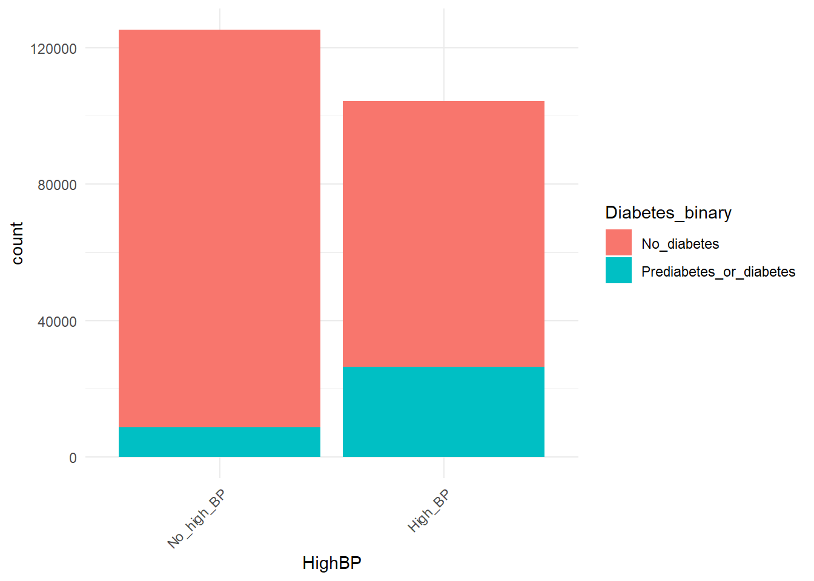
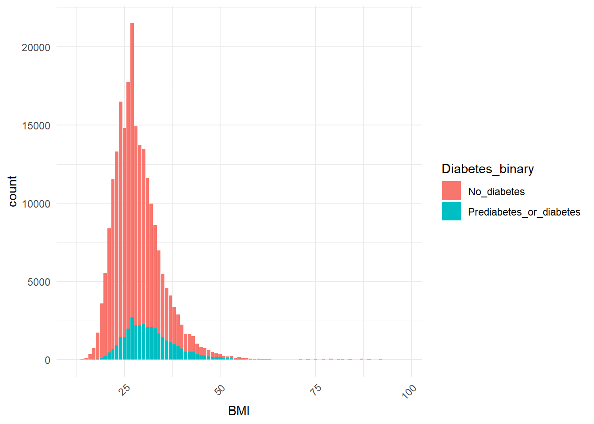
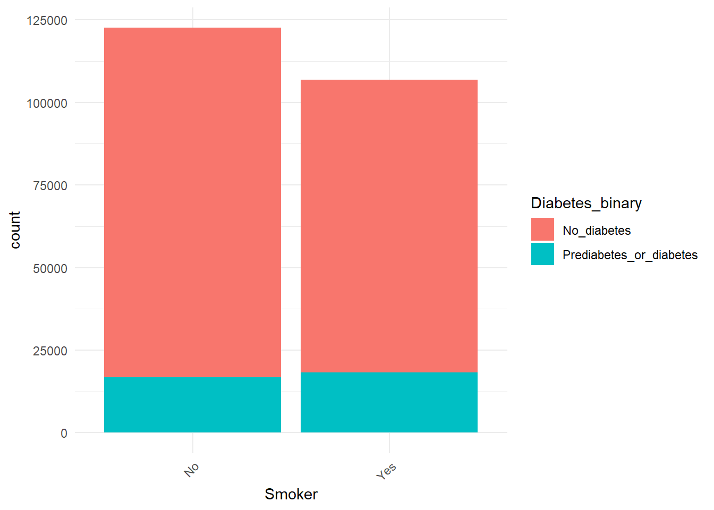
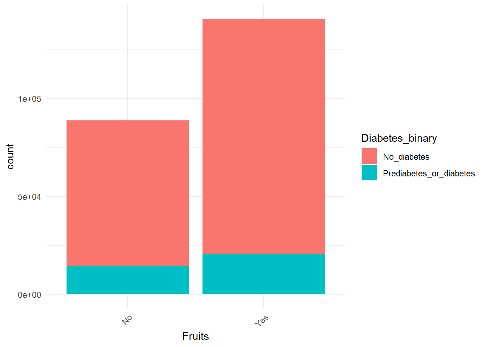
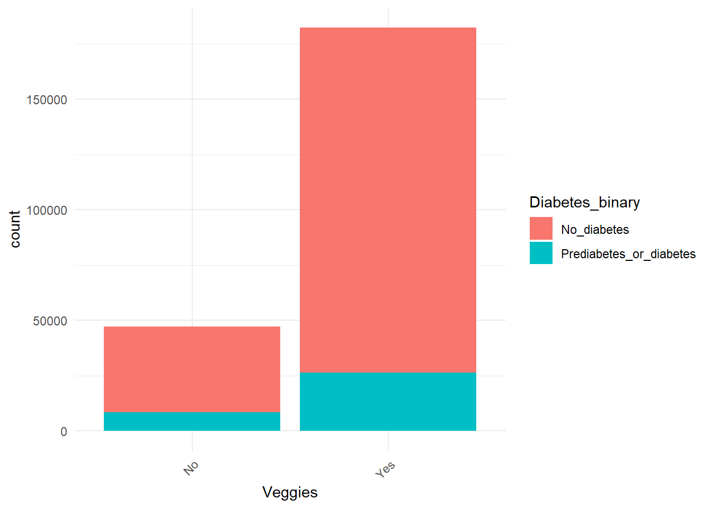
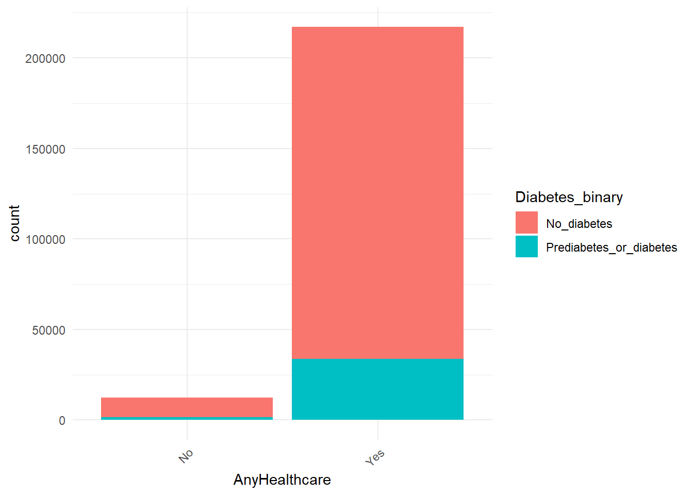
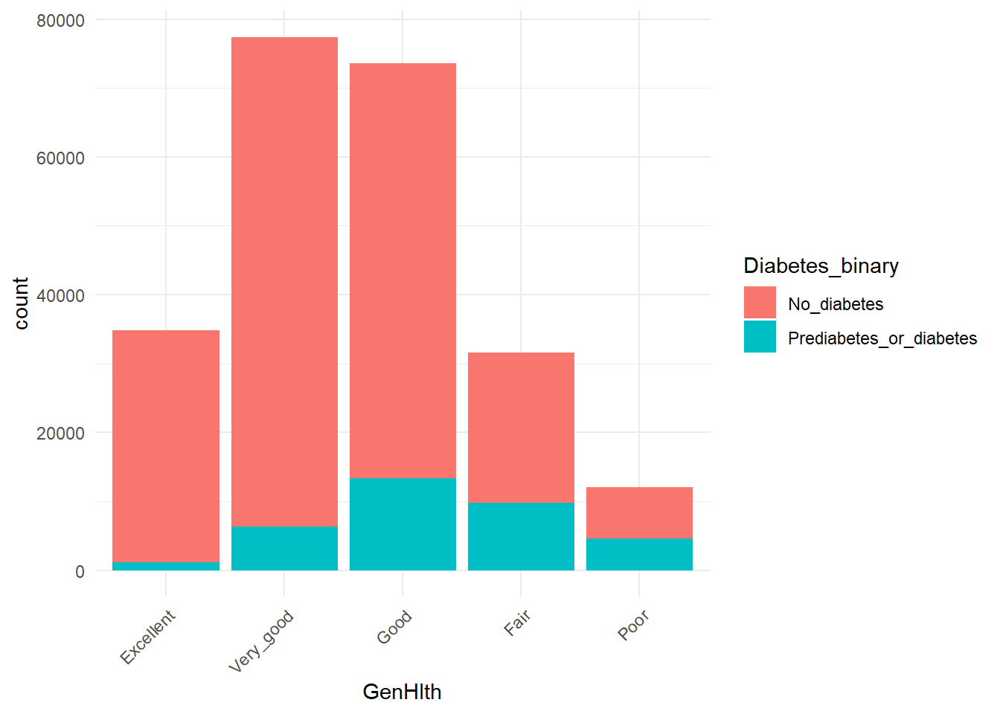
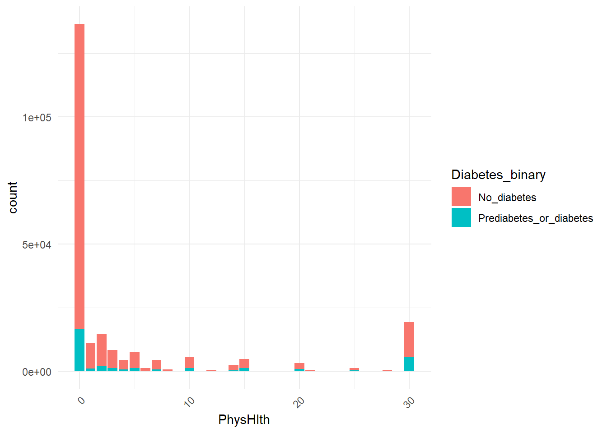
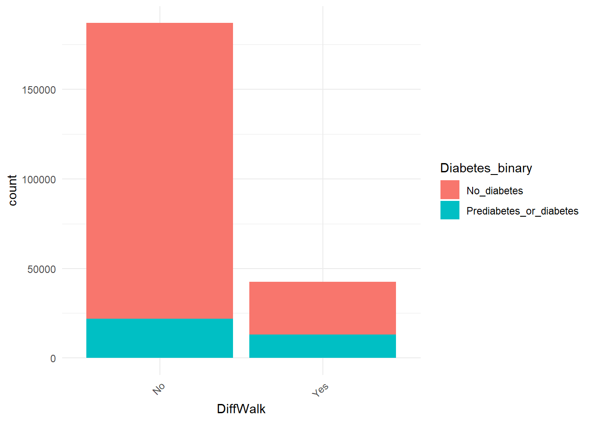
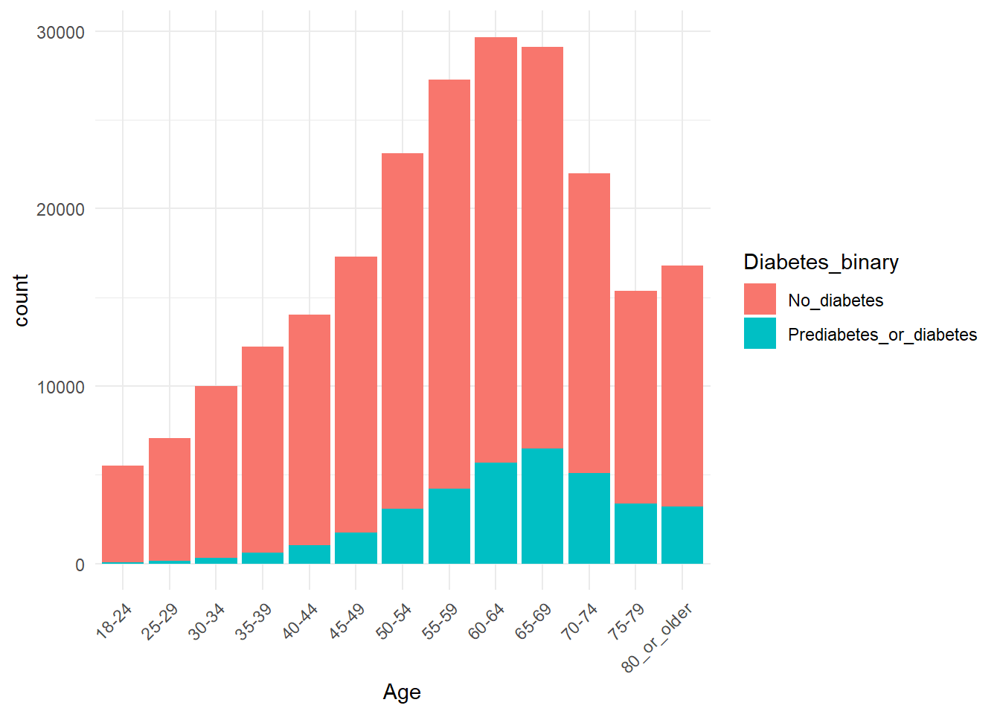
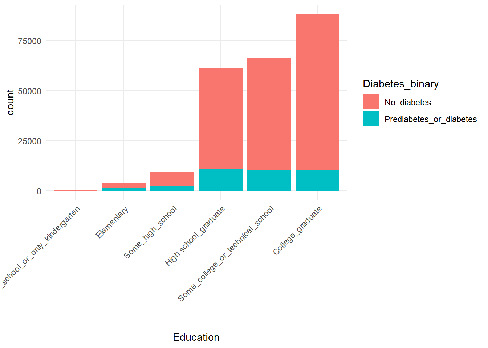
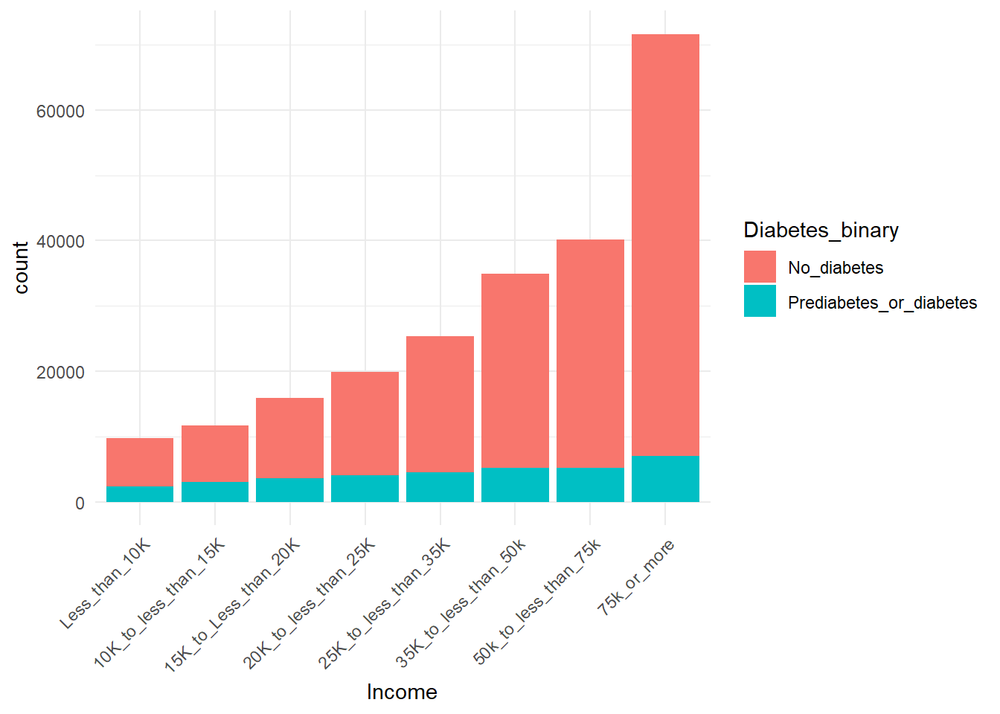
Let’s further look at correlation heatmap which shows relation between variables.
# Compute correlation matrixcorr_matrix <-cor(data_no_duplicates)# Convert correlation matrix to data frame for easier manipulationcorr_df <-as.data.frame(as.table(corr_matrix))corr <- corr_df |>filter(Var2 =="Diabetes_binary") |>arrange(desc(Freq))corr
# Rename columns for claritycolnames(corr_df) <-c("Variable1", "Variable2", "Correlation")# Sort correlation values from largest to smallestsorted_corr_df <- corr_df[order(-abs(corr_df$Correlation)), ]# Create correlation heatmapcorrplot::corrplot(corr_matrix, method ="color", type ="lower", order ="hclust",tl.col ="black",tl.srt =45)
From all the exploratory analysis above, we can see that there are variableshighly positively correlated with each other: PhysHlth and GenHlth, PhysHlth and DiffWalk, GenHlth and DiffWalk, Income and Education. There are variables highly negativelycorrelated with each other: Income and GenHlth, Income and DiffWalk. Variables (GenHlth, HighBP, DiffWalk, BMI, HighChol, Age, HeartDiseaseorAttack, PhysHlth) are positively correlated (Freq over 0.1) with Diabetes_binary; variables (Income, Education, PhysActivity) are negatively correlated (Freq lower than -0.1) with Diabetes_binary.